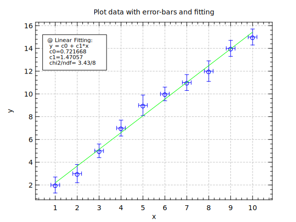

title "Plot data with error-bars and fitting"
set x = range(10,1,10)
set y = {2,3,5,7,9,10,11,12,14,15}
set ex = {0.2,0.2,0.2,0.2,0.2,0.2,0.2,0.2,0.2,0.2}
set ey = {0.7,0.8,0.6,0.7,0.9,0.6,0.7,0.9,0.7,0.7}
div 1 1
opt (gd:1 xm:0.1 ym:0.1)
plot x y (lw:0 st:arc sc:blue ss:0.8 xt:1 yt:2)
xerr x y ex
yerr x y ey
fbox 0.03 0.3 0.73 0.93 (rc:1 ft:solid fc:white)
fit x y lin (cp:0.05,0.9 rc:1 ts:0.8 lc:green)
